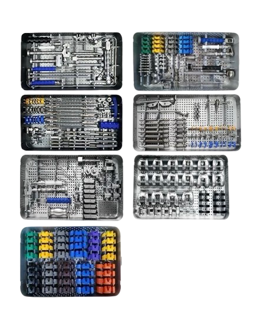

| Contents | Label Scan |
|---|---|
| Femoral trial tray | 20261114-082 |
| Femoral preparation tray | 20270106-419 |
| Tibial preparation tray | 20250930-157 |
| Tibial stem tray | 20270227-023 |
| Tibial insert trial tray | 20260512-901 |
| Tibial resection guide tray | 20270324-556 |
| Patella preparation tray | 20251217-312 |

Patient identification (MRN): #34567
Procedure: TKA (right)
Surgeon: Stevenson, M
Date: 2/23/2027
Time: 7:30 am
OR: 1
Sterilization Date: 2/22/2027
Sterilization Time: 6:35 pm
Expiration Date: 3/4/2027
Sterilizer ID: Autoclave 4
Cycle Number: 5
Load Type: Pre-vac Steam
Parameters: 4:5 273° 29 PSI
Biological Indicators: Negative/Passed
SPD Tech ID: Peters, A
Contents Verified by: Thomson, G
SteriCUBE Part Number: SC1-300
Lot: 3325
Asset Tag Number: SPD68549
Software Version: 2.1.0
Last Service Date: 1/6/2027
Service ID: J0627-005
Calibration Results: Passed
Spore Test Result: Passed
Technician: J. Dodson